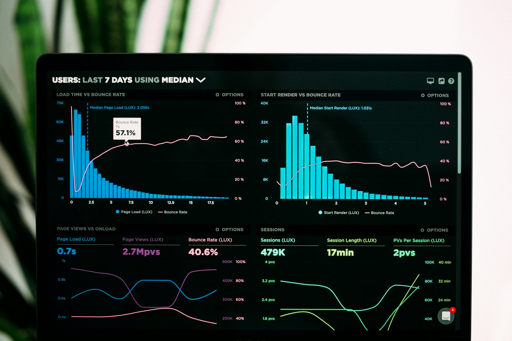
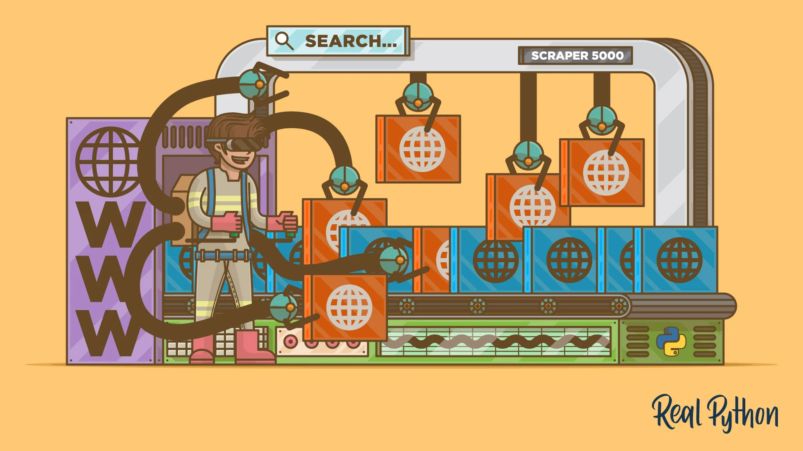

CLICK & HOLD
Richard Villalba
Sou Técnico em Eletrônica com 8 anos de experiência em reparo e manutenção, atualmente cursando Análise e Desenvolvimento de Sistemas no Senac.
Tenho sólida base em desenvolvimento web (HTML, CSS, JavaScript, Python) e conhecimentos em lnteligência Artificial e metodologias ágeis. Ao longo da minha trajetória, destaquei-me pela capacidade de resolver problemas complexos e otimizar processos.
Idiomas: Português (nativo), Espanhol (nativo) e Inglês (intermediário).
Busco oportunidades desafiadoras em tecnologia e inovação, com foco em entregar soluções que gerem impacto e valor real.



